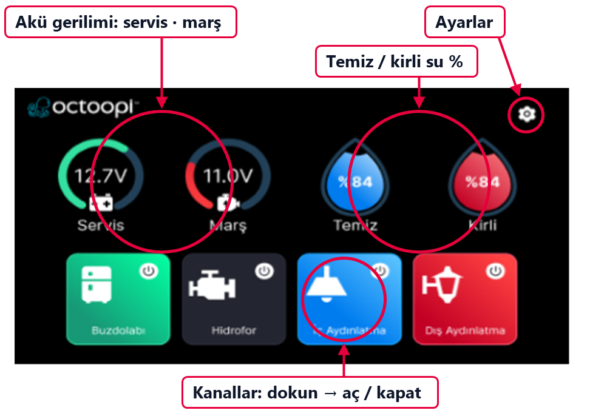
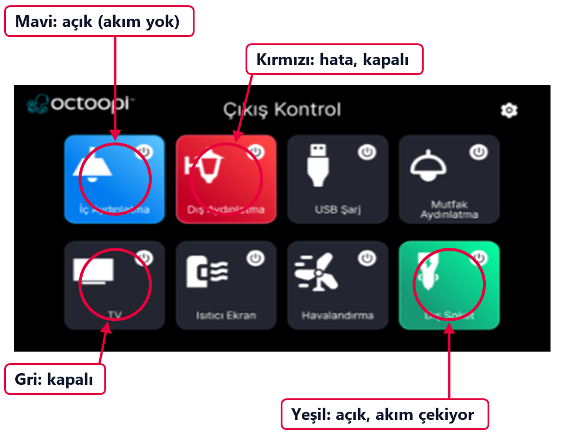
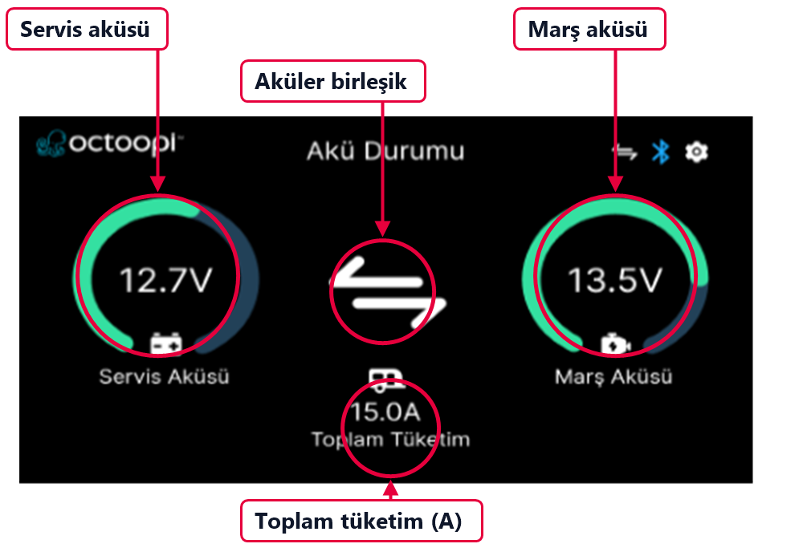
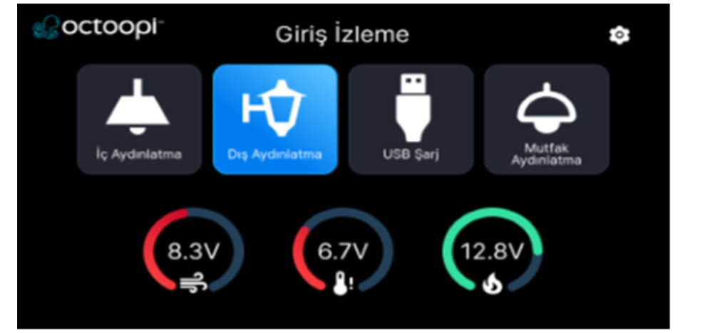
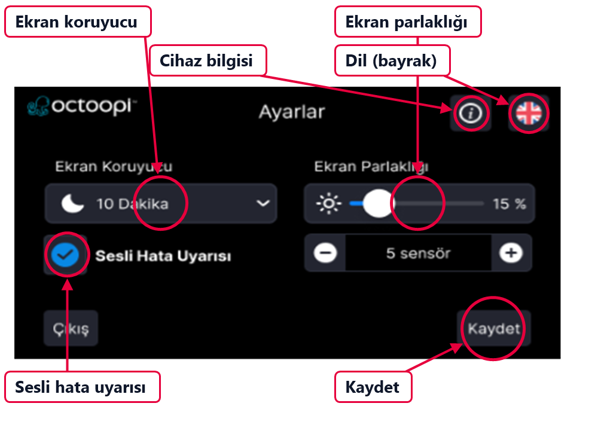
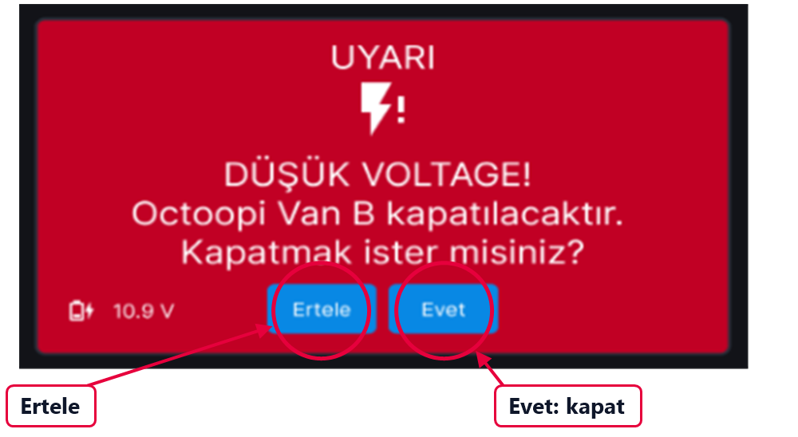
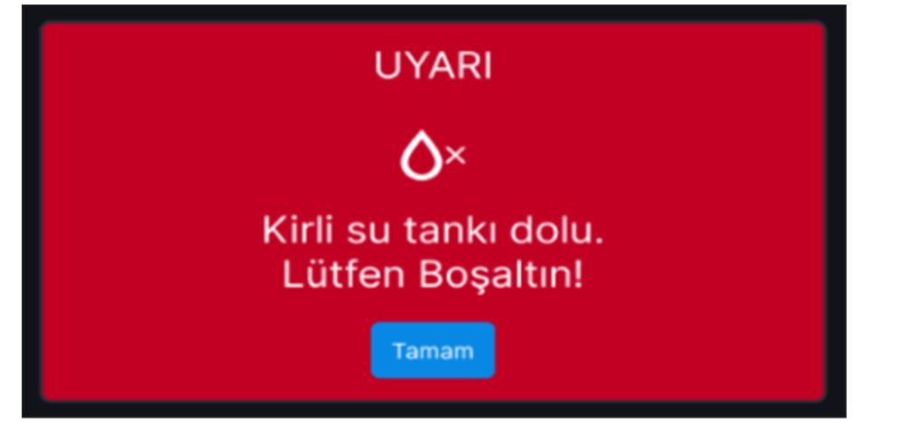
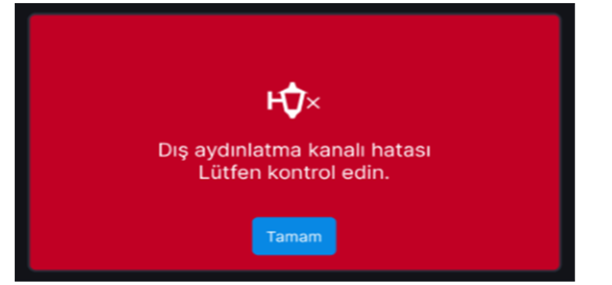
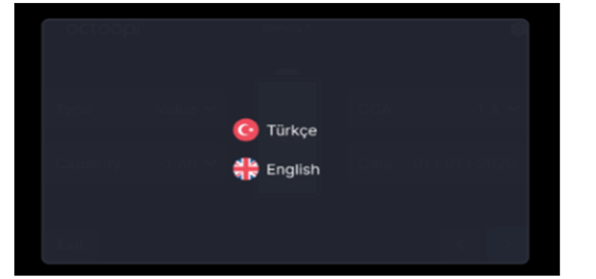

![Demonte Caravan]()






| ☐ | Servis aküsü göstergesi yeşil veya sarı (12 V üzeri) |
| ☐ | Temiz su deposu dolu; kirli su deposu boşaltılmış |
| ☐ | Kullanılmayan kanallar kapalı (gri) |
| ☐ | Kırmızı (hatalı) kanal veya açık uyarı yok |
| ☐ | Araçtan ayrılırken panel kapatıldı |


